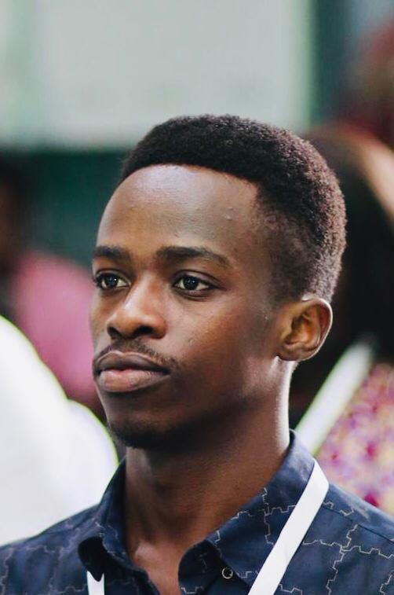

CV Page Design

Junior Developer · Interaction Designer
izerimanab74@gmail.com · +233 (2) 5723-2062 · Berekuso
I believe digital software should feel as tangible, personal, and enduring as a well-loved linen notebook. With training across both computer science and visual communication, I bridge rough paper prototypes with production-ready frontend architectures.
B.S. in Computer Science
GPA 3.92 · Dean's Honors List · President of Creative Tech Club.
High chool
Focused on Maths, Physics & Computer Sciences.
San Francisco, CA
Shipped canvas micro-interactions and performance optimizations for block editor components. Reduced re-render overhead by 24% across complex nested blocks.
Berkeley, CA
Mentored 40+ undergraduates in modern JavaScript, SVG graphics, and responsive web design. Shipped the interactive Cal Day exhibition site serving 35,000+ visitors.